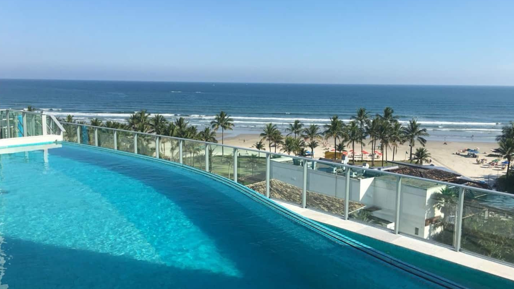
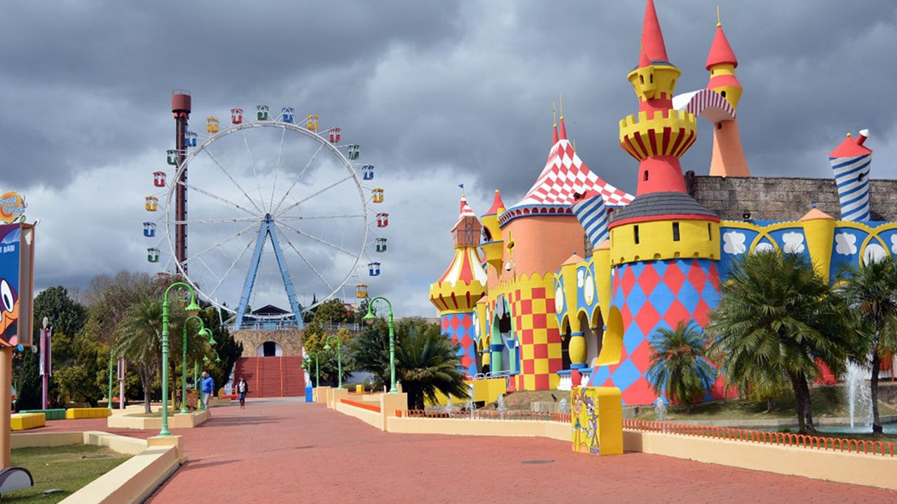

Riviera de São Lourenço ☀️
A cidade de Guarujá, situada na Ilha de Santo Amaro, foi visitada pela primeira vez no dia 22 de Janeiro de 1502 pelos exploradores portugueses. Hoje Guarujá é o destino ideal para quem quer desfrutar das belezas naturais e garantir e um passeio com muita diversão e cultura.
Saiba mais

Hopi Hari 🎡
Uns contam que Hopi Hari nasceu como presente de Hopi, Deus da Alegria, para sua amada Hari Deusa da Aventura. Outros acreditam que Hopi Hari é uma colônia de férias superiores que habitam a Via Láctea. Mas histórias são histórias e hipóteses são hipóteses.
Saiba mais